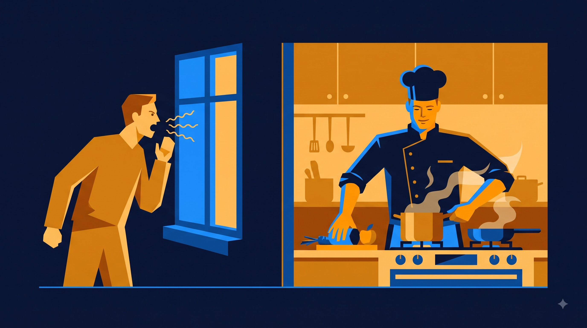
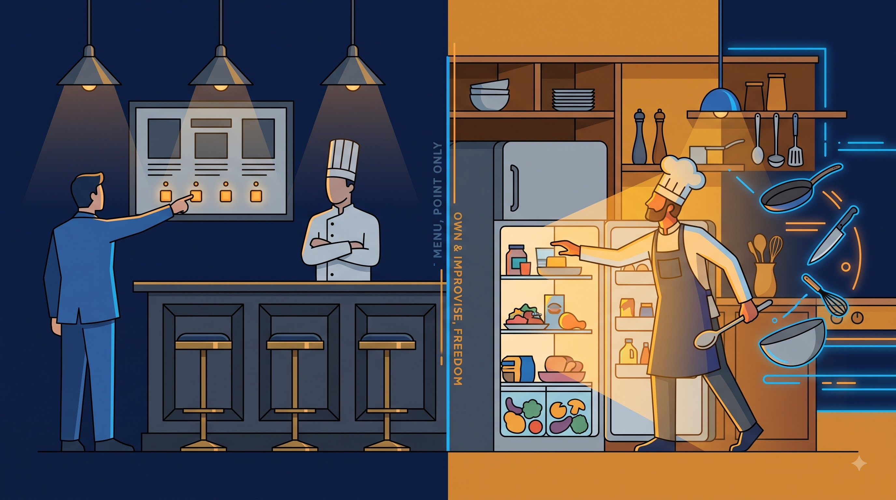
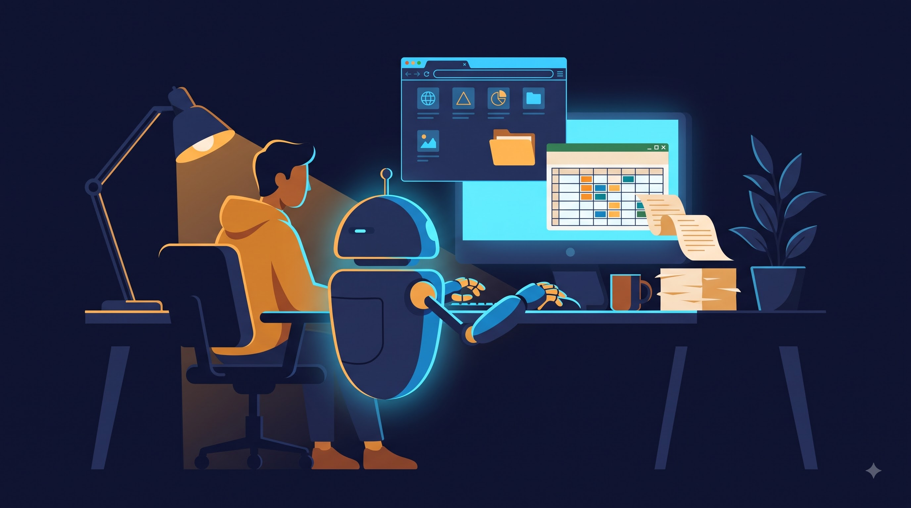
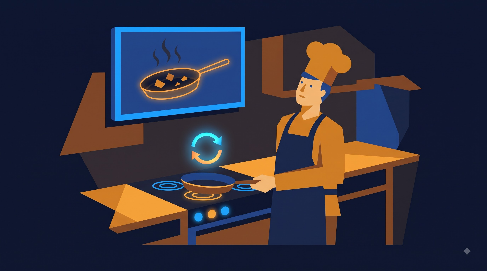
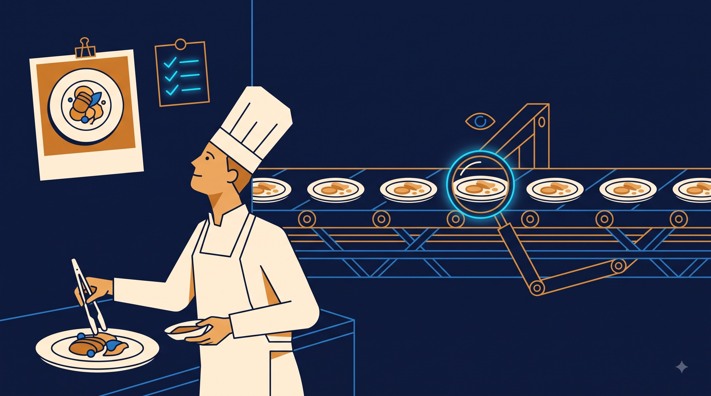

프롬프트의 종말
에이전트 시대의 업무자동화
바이브코딩으로 다시 보는 Claude 활용 — 개념 · 시연 · 동기부여
조성호 · KODE KOREA 대표 · 부산대학교 AI융합교육원 강사
지난주, AI에게 시킨 일은?
오늘의 한 문장
AI에게 말을 잘하는 시대는 끝났고,
AI에게 일터를 내주는 시대가 왔다.
Agenda 120분
45분마다 시연 하나, 15분마다 퀴즈 하나
01 · 프롬프트의 종말
컨텍스트 · 스킬 · MCP · CLI
20분02 · Agent vs SaaS
오늘의 중심. 무엇이 다른가
25분03 · 대형 시연
Chrome · Computer Use · Design
35분04 · 그래서 여러분은
개발자가 될 필요는 없다
30분Section · 01 20분
프롬프트의 종말
왜 '프롬프트 잘 쓰기' 강의는 곧 사라지는가
개념 · 첫 번째 비유
챗봇과 에이전트는 다르다

챗봇은 창밖에서 레시피를 불러주는 사람,
에이전트는 주방에 직접 들어와 요리하는 사람.
그래서 에이전트는 손(설치)이 필요합니다. 여러분의 컴퓨터, 폴더, 브라우저에 들어와야 일을 할 수 있으니까요.
프롬프트 = 주문 내용. 매번 새로 말해야 한다
말 대신 남기는 것 세 가지

시연 ① 5분
같은 요청, 프롬프트만 vs 스킬 파일 하나
주문만 외친다
- "현장 점검 메모 보고서로 정리해줘"
- 양식이 매번 다르게 나온다
- 지난주 지적사항을 또 설명해야 한다
- 옆자리 동료는 처음부터 다시
매뉴얼 파일을 붙인다
- SKILL.md 한 장: 양식 · 합격 조건 3줄 · 예시 1건
- 같은 한 마디로 같은 결과
- 지적사항은 파일에 한 줄 추가로 끝
- 파일 복사 = 부서 전체 배포
매주 반복하는 보고서를 AI에게 맡기려면
무엇을 만들어야 할까?
Section · 02 25분
Agent vs SaaS
오늘의 중심. 빌려 쓰는 것과 데려다 쓰는 것
개념 · 두 번째 비유
남이 지은 식당, 우리 집 주방

SaaS = 남이 지은 식당.
메뉴판에 있는 것만 시킬 수 있다.
Agent = 우리 집 주방에 온 요리사.
재료·도구를 다 만지고, 없으면 만들어 쓴다.
번역기·요약기·챗봇 창은 전부 식당입니다. 편하지만, 한전의 양식과 규정은 메뉴판에 없습니다.
표 하나로 끝내는 차이
세 가지 질문만 던져 보세요
| 질문 | SaaS (식당) | Agent (우리 주방) |
|---|---|---|
| 누가 도구를 고르나? | 서비스 회사가 미리 정해 둔다 | 에이전트가 상황 보고 고른다 · 없으면 만든다 |
| 실패하면 누가 재시도하나? | 사람이 다시 누른다 | 로그를 보고 스스로 다시 한다 |
| 우리 회사 규정을 아나? | 모른다 · 알려줄 방법도 제한적 | 인수인계 문서(CLAUDE.md)를 읽고 일한다 |
챗봇 → 코파일럿 → 에이전트
그래서 "손(설치)"이 필요하다
챗봇
창밖에서 대답만 한다. 복사·붙여넣기는 내 몫.
브라우저 창코파일럿
내 문서 옆에서 제안한다. 실행 버튼은 여전히 내가 누른다.
앱 안의 보조에이전트
주방에 들어와 직접 만들고, 고치고, 실행하고, 스스로 재시도한다.
폴더 · 브라우저 · 컴퓨터한전의 업무 지식은 SaaS가 갖고 있지 않다.
그래서 도메인 전문가인 여러분이
병목이자, 가장 큰 자산이다.
에이전트 시스템 설계에서 대체 불가능한 것은 코딩이 아니라 현장 지식
내 업무 중, SaaS로는 안 되는데
사람 손으로 하고 있는 일은?
예) 월간 실적 취합 · 민원 회신 초안 · 점검표 사진 정리 · 규정 개정 대조
Section · 03 35분
에이전트가 실제로 일하는 장면
Claude in Chrome · Computer Use · Claude Design
시연 ② · Claude in Chrome 10분
브라우저는 "남의 집". 에이전트가 거기까지 간다

- 사내 포털형 샘플 사이트에서 공지 30건을 읽는다
- 제목·부서·기한을 엑셀로 정리한다
- 기한이 3일 이내인 것만 골라서 요약한다
- 내가 한 일: 한 문장 말한 것뿐
시연 ③ · Computer Use / Cowork 12분
일부러 실패시킨다 — 그리고 스스로 다시 한다
- 폴더 속 현장 점검 메모 수십 건(가명화 샘플)
- 취합 → 보고서 초안 → 엑셀 집계
- 중간에 양식이 깨진 파일 하나를 심어 둔다
- 에이전트가 로그(주방 CCTV)를 보고 원인을 찾아 재시도

시연 ④ · Claude Design 8분
"만들어 달라"가 아니라 완성 사진을 먼저
1 · 소재는 설문 ③에서
워드클라우드에서 고른 업무 하나 — 예: 월간 실적 대시보드, 안전 캠페인 안내물
2 · 레퍼런스 한 장
잘 만든 예시 화면을 먼저 보여주고 "이 톤으로, 우리 데이터로"라고만 말한다
3 · 즉석 수정
청중이 외치는 대로 색·문구·배치를 그 자리에서 바꾼다. 화면이 움직이는 것을 본다
방금 시연에서, 에이전트가 실패했을 때 한 일은?
Section · 04 20분
그래서 여러분은
무엇을 하나
개발자가 될 필요는 없다. 이미 후배에게 하던 일이다
필요한 것은 세 가지뿐
완성 사진 · 합격 조건 3줄 · 샘플 검수

전부, 여러분이 신입에게 이미 하던 일입니다.
한 장 그림 · 하네스 8단계
주방을 세팅하고, 루프를 돌리고, 매뉴얼로 남긴다
공기업 현실 안내
어디까지가 안전한 시작점인가
넣지 않는 것
고객 개인정보 · 내부 전용 문서 · 설비 상세 데이터. 망분리 환경에서는 외부 AI에 원문을 올리지 않는다.
대신 하는 것
가명화 · 샘플 10건으로 스킬을 먼저 만든다. 스킬 파일 자체에는 데이터가 없다 — 양식과 규칙만 있다.
그래서 가능한 것
스킬은 밖에서 만들고, 데이터는 안에서 돌린다. 규정이 허용하는 사내 환경이 열리는 순간 그대로 이식.
부서별 첫 스킬 후보
내일 아침, 이 셋 중 하나부터
주간보고 취합
팀원 메모 5건 → 부서 양식 1장. 합격 조건: 3문단 · 수치 근거 · 존댓말.
사무·기획민원 답변 초안
민원 유형별 답변 톤과 필수 문구를 매뉴얼로. 사람은 마지막 검수만.
고객·영업규정 개정 대조표
구·신 조문을 나란히, 바뀐 곳만 표시. 검증기: 누락 0건.
총무·감사오늘 배운 것을 어디에 남길 것인가
지속성 3단계
오늘의 대화
내일 이어서. 내 컴퓨터에만 남는다.
/resume인수인계 문서
다음 분기까지. 파일이라 옮길 수 있다.
CLAUDE.md스킬 파일
옆 부서에 넘겨준다. 조직의 자산이 된다.
SKILL.md내일 당장 스킬로 만들고 싶은
내 업무 하나는?
AI에게 일터를 내주는 시대.
병목은 기술이 아니라 현장 지식입니다.
조성호 · KODE KOREA 대표 · seongho.cho@kodekorea.kr · kodekorea.kr